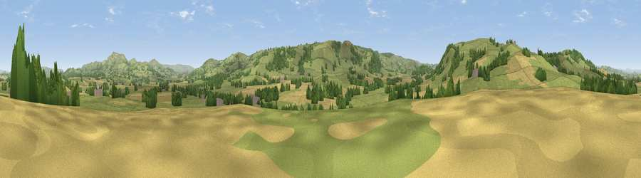

Viewpoint near Chirbury
#26045 in England · top 74% of its area beats it · near ChirburyThe view, rendered

A 360° render of this exact spot computed from the terrain model, tree cover and land cover — summer colours, afternoon light, calibrated against photographs of famous viewpoints. Real trees, hedges and buildings will differ in detail.
The panorama
Grey silhouette: terrain skyline in each direction (720 bearings, Earth curvature and refraction included). Dashed green: skyline with trees (+15 m) and buildings (+8 m) as obstacles. Blue strip: how far the ground is visible on each bearing.
Where the view opens
Wedge length = distance to the farthest visible ground on that bearing (vegetation-aware). Rings at 10, 25 and 50 km.
What fills the view
63% grassland · 21% cropland · 15% woodland ·
Angular shares of the visible panorama (visual magnitude), not map area. Landscape diversity 0.41 (0–1 Shannon).
Key numbers
More beautiful places nearby
The staircase of upgrades: each row has a higher view potential than everything closer. Driving times are estimates from straight-line distance, calibrated against real road routing — check an actual route before setting out.
| Place | Direction | Drive | Score |
|---|---|---|---|
| Viewpoint c5793_6495 | SSE · 4 km | ~9 min | 67.6 |
| Viewpoint c5788_6522 | SE · 5 km | ~11 min | 70.5 |
| Viewpoint c5772_6450 | SSW · 5 km | ~11 min | 72.5 |
| Viewpoint near Bishop's Castle | SE · 5 km | ~12 min | 75.5 |
| Viewpoint near Lydham | E · 10 km | ~19 min | 78.6 |
| Viewpoint near Stiperstones | ENE · 16 km | ~28 min | 82.0 |
| Viewpoint near Asterton | ESE · 16 km | ~29 min | 83.0 |
| Viewpoint near Halfway House | NNE · 21 km | ~35 min | 83.3 |
52.53330, -3.12884 · source: screening · position refined by local search. Computed location — check access rights before visiting.